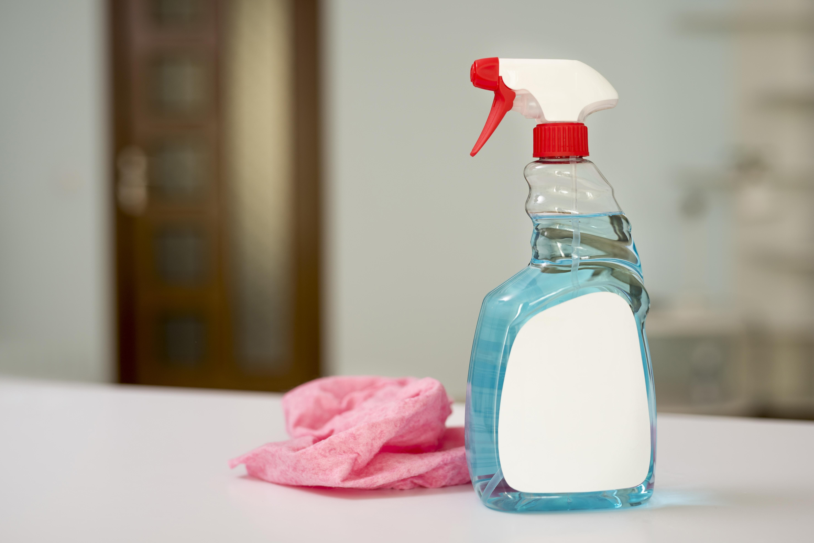
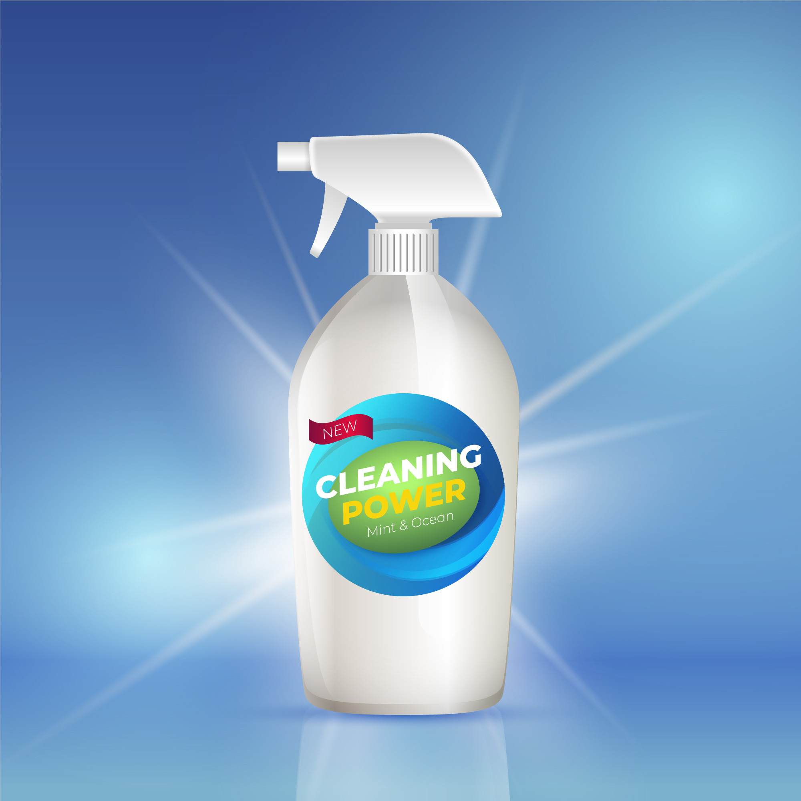
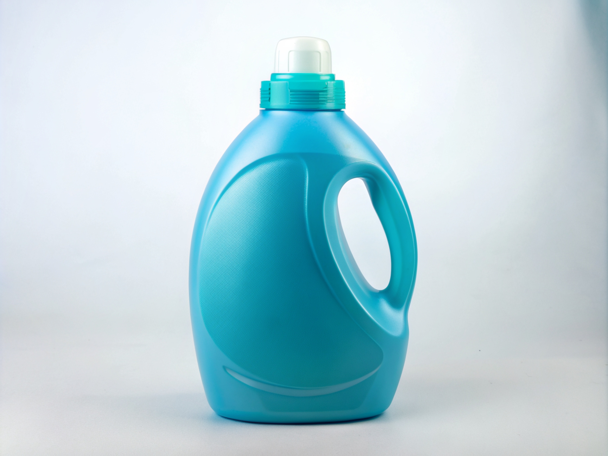
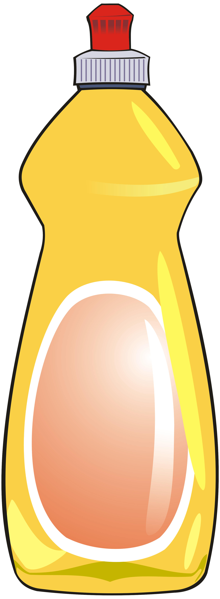

GreenSpark All-Purpose Cleaner is made with plant-based ingredients that effectively remove dirt, grease, and grime from a variety of surfaces. It is safe for everyday use and comes in a refillable bottle to reduce plastic waste.

Our Glass Cleaner provides a streak-free shine on windows, mirrors, and glass surfaces. The non-toxic formula delivers professional results without harsh chemicals or strong odors.

GreenSpark Laundry Detergent is designed to remove stains and odors while remaining gentle on fabrics. Its concentrated formula helps reduce packaging waste and supports environmentally responsible cleaning.

Our Dish Soap cuts through grease and food residue while being gentle on hands. Made with biodegradable ingredients, it provides powerful cleaning performance while protecting the environment.
© 2026 GreenSpark Cleaning Co. Eco-Friendly Cleaning Solutions